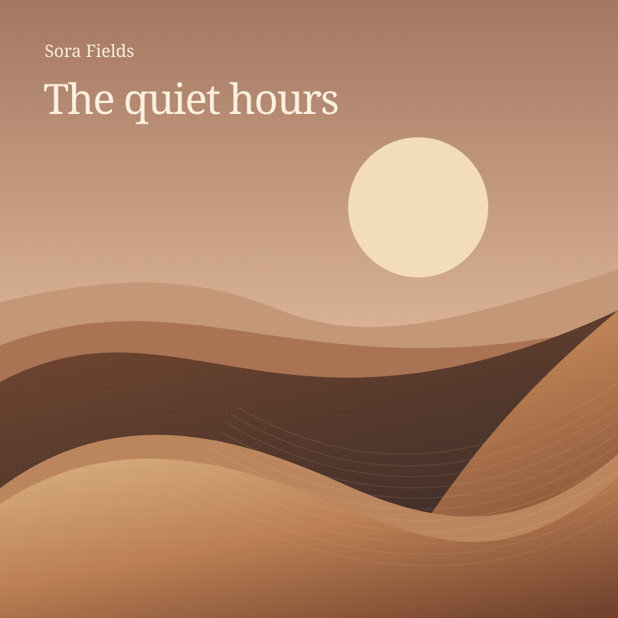

Original artwork1:23−3:21
Sample collection
Your library
Good music, close at hand.
Library preview · On Portal, Browse music opens your connected provider’s library.
All tracks
12 sample tracksA soundtrack for your space
Playlists
Pick a mood. Stay a while.
Playlist preview · Choosing a playlist changes the sample queue only. Provider browsing is deferred.
Sample time · Sensors and audio are not connected
Music, with room for everything else.
The compact player keeps the essentials close.
Sample controls · No audio output